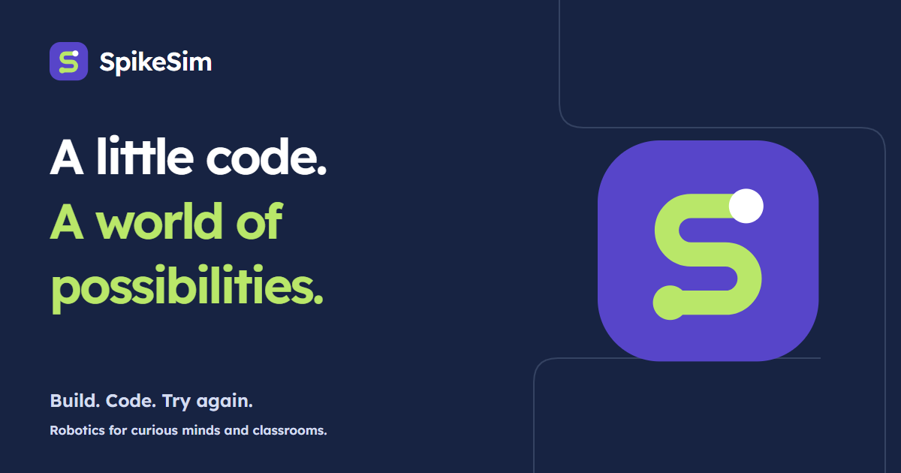

The SpikeSim identity · Edition 01
A little code.
A world of
possibilities.
A robotics playground for curious minds.
Build a robot. Give it an idea. See what happens.
Start with an idea.
Make your next move.
01 / The idea
Small steps.
Something worth building.
SpikeSim helps students turn instructions into things they can see. The route mark traces an S between two points: an idea, a test, and a next step. It belongs just as naturally on a student’s project as on a teacher’s competition screen.
02 / Colour with a purpose
Curiosity, with clarity.
Violet leads. Lime adds a spark.
Ink and paper leave room to think.
Use ink on lime and paper, and white on route violet and ink. Use the brighter studio violet #7460EE for supporting interface accents. Pair every status colour with a label or symbol.
03 / Type that teaches
Clear at every step.
Lexend gives the identity its shape. Atkinson Hyperlegible keeps explanations easy to read. JetBrains Mono is reserved for code in the app. All fonts are bundled locally.
Lexend · 600Try. Learn.
Try again.Atkinson Hyperlegible · 400
Try again.Atkinson Hyperlegible · 400
Turn the robot 90°. Run your program.
What would you change next?
04 / How we sound
A helpful lab partner.
Curious, direct and encouraging.
Every sentence helps someone take a step.
“Change one value.
See what happens.”
Make the next action small and clear. Learning comes from trying.
“Your work is saved.
Try connecting again.”
Say what happened and what to do. Only promise a save after it succeeds.
“You reached the goal.
How did your robot know?”
Celebrate the student’s reasoning as well as the result.

05 / Ready to use
Make it SpikeSim.
Original artwork for the app, class slides and project updates. SVGs include the local wordmark font; PNGs keep the exact lettering in presentation tools.
Keep the mark upright. Leave at least one quarter of its width clear on all sides. Use it at 24 px or larger in layouts; the favicon may be smaller.